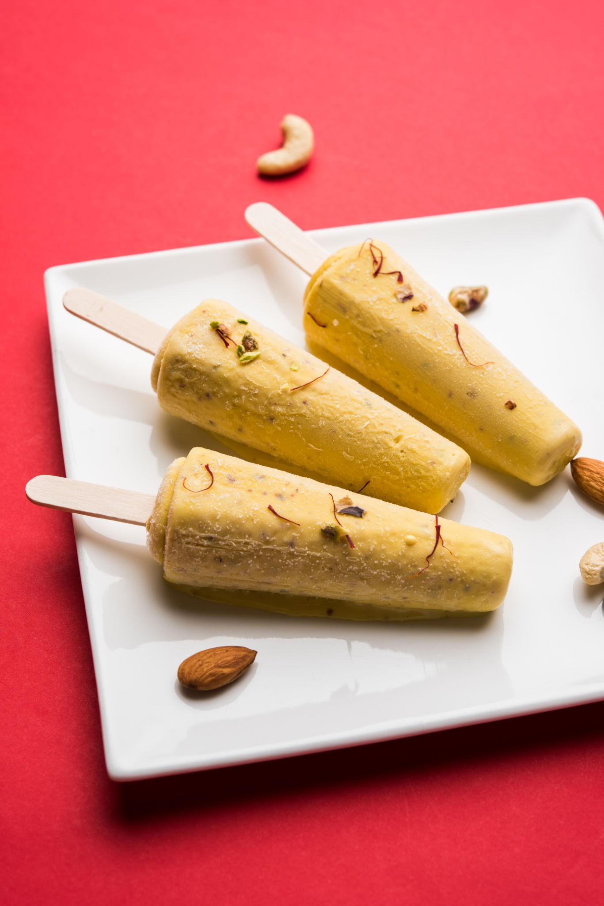

Kulfi

Description
Kulfi is a frozen dairy dessert originating in the Delhi under the Mughal Empire[2] during the Mughal era in the 16th century. It is often described as "traditional Indian ice cream". Kulfi is denser and creamier than regular ice cream and itt comes in various flavours.